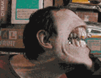

Masonería
 De: La Frikipedia, la enciclopedia extremadamente seria.
De: La Frikipedia, la enciclopedia extremadamente seria.
La masonería es una organización no tan secreta (si no no estarias leyendo esto) nacida en el siglo π antes de Fraga. Los miembros de dicha orden, los masones, se caracterizan por una masa corporal elevada, de ahí su nombre.por lo tanto que cada uno de los mamones masones son conocidos por su gran masa corporal.
El origen de la masonería se encuentra en el Inframundo, de ahí que también se le llame francmasonería. Otras teorías sugieren que el fundador real de la masonería es Franco que más tarde discreparía con el resto de los masones en cuestiones de masa corporal y se enfadaría hasta tal punto de acusarles de una conspiración secreta para destruir España y dominar el mundo, al menos su parte cárnica. Sea como fuere, lo que está claro es que la masonería tiene su origen filosófico en las teorías cárnicas de María Teresa Campos.
La masonería es una organización altamente jerarquizada. Cada miembro es identificado por un número sagrado, que depende del orden de ingreso en la orden (valga la sinécdoque). Con cada número adquirido, se asegura al miembro que será tras alcanzar el siguiente cuando por fin comprenderá para qué demonios sirve pertenecer a tan vetusta Orden. Los miembros hacen diversos rituales complejos y largos, algunos de varios milenios de duración, en los que cada miembro tiene una función concreta. El objetivo último de los rituales es mostrar los símbolos sagrados, tras lo cual celebran su correcto cumplimiento, mediante la ingesta masiva de pizza cerveza y rehacer la website de HazteOir.org. Esto contribuye a el engrandecimiento de los masones, físicamente hablando. Básicamente es lo único que hacen.
Los masones, como ya se ha comentado con anterioridad, poseen una gran masa corporal, cuyo tamaño oscila entre enorme y gargantuesco. Esto les otorga un bonificador de +4 a las tiradas de constitución al resistir heridas en combate y de fuerza a la hora de derribar adversarios abalanzándose sobre ellos. No obstante, tienen un penalizador de -4 a la destreza y a la constitución en actividades físicas como nadar, volar o medir un potencial gravitatorio con las uñas.
Se rumorea que los canteros son una escisión de los masones, aunque no hay pruebas físicas, ya que fueron devoradas por Homer Simpson.}}
Dicese del humanoide que se asocia con otros de su misma clase con el fin de conspirar y dominar el mundo, lo que le convierte en el enemigo natural del friki, que compite por el dominio de este insignificante planeta en el que vivimos. Se tiene teorias de que los masones se perpetúan por gemación al igual que las estrellas de mar, pierden un brazo y de él sale otro masón; en ocasiones extremas podrían llegar a ovular.Otra teoria dice que se reproducen a traves de la fotosintesis y eso explica porque se mueven donde esta el sol. Los masones son comunitarios, se agrupan para ayudarse entre ellos y a la par conspirar contra ti. A veces la masonería es denominada francmasoneria, lo que viene a decirnos que se agrupan bajo tierra, es sencillo: Franc=Francia=Inframundo=Subterraneo.
Excavan tuneles bajo tierra cuales topillos y alli organizan orgías y bacanales esperando ordenes de un jefe secreto al que todos los masones lamen el culo y que, en caso improbable de que los masones no lleguen a dominar el mundo, les llevara a todos a un planeta llamado felizonia.
¿Cómo puedo saber si alguien es masón?
Como puedes observar este perro es mason
- Si te da la mano de manera extraña, es un mason
- Si se rasca el culo contra un arbol, es un mason
- Si se toca los huevos con las dos manos, es un mason
- Si tiene brazos cortos y no se puede tocar el culo, es un mason
- Si no te deja ser mason, es un mason
- Si le preguntas si es mason y responde que no, es un mason
- Si lleva anillos con cruces y pedruscos, es un mason
- Si cree ser el ombligo del mundo y mezcla conceptos basicos, es un mason
- Si aprueba todas cada cuatrimestre, es un mason
- Si tiene un comportamiento extraño, es un mason
- Si gana en los juegos de azar, es un mason
- Si le toca pagar por sexo, es un mason
- Si te hace perder la materia, es un mason
- Si tiene problemas para folliquear, es un mason
- Si se mete en una alcantarilla, es un mason
- Si la tiene chica, es un mason
- Si es grasiento y solo sabe de informatica y lesbianas, es un mason
- Si se alimenta de permanganato potásico y sulfato de cobre, es un mason
- Si tiene cara de cubeta y solo come bocadillos de morzilla con ron, es un mason
- Si tiene algo en contra tuya, es un mason
- Si tiene algo en contra de otro mason, es un mason
- Si sabe mas de porno que tu, es un mason
Antimasonería
 Asi son los masones cuando tu no los ves, al menos eso creemos
La antimasoneria esta constituida principalmente por Franco y los frikis. El asunto de los frikis ya esta explicado anteriormente y consiste en la competencia por el dominio del mundo. Luego Franco habló del "contubernio judeo-masónico" que ni siquiera el mismo sabia que cojones significaba. Simplemente Franco odiaba a los masones porque le robaron su muñeco de Pikachu, asi le causaron un trauma desde pequeño que desembocó en una sexualidad zoofilica e invertida y ademas un deseo de aniquilar a todo lo que se menea.
Arte Masónico
Cine
- Masonic Park: Film que retrata la vida interior de una comunidad masónica normal de Medio Oeste de los Estados Fundidos.
- Lo que el mason se llevó: Cinta que desvela el odio entre masones y anoréxicos durante la guerra civil española.
- Masones y mazmorras:Sentida descripción de las inquietudes de un joven masón por internarse en el proceloso mundo del sadomasoquismo y cómo logra que el resto dela comunidad de Arbo les acepte.
- El mason de los anillos (La comunidad del mason, Las dos masonas, El mason del rey)
- Mason Wars (Mason Wars, El mason contraataca, El retorno del mason)
- El sexto mason: o como el último masón de la puerta de atrás de la logia convirtió un lugar lleno de secaderos de jamón en una ciudad cosmopolita llamda A Cañiza.
- Mason runner: Un grupo de masones aterrizan en la tierra para comer todas las frituras de los chiringuitos de Marbella y la Guardia Civil encarga a Rick Antimasón que les pida la documentación a tan horripilantes criaturas.
- Pretty mason: Es la historia de un masón que es aceptado por Federico Jiménez Los Santos y narra su amor por él, y como contra viento y marea se casaron en un barco de Pescanova mientras faenaban frente al Gran Sol (Tui)
- Masones en la tercera fase
- 2001: Mason en el espacio
- Mason a los 40
- Mason Poppins: Narra las desdichas de unos huerfanitos del presidente de los Estados Fundidos, que son internados en un colegio masón donde sus profesores les comen el tarro para que voten al PP y confeccionen bates de béisbol para nazis.
- Masones y lagrimas: Es la historia de un grupo de élite masónica entrenada por Chuck Norris para secuestrar a Steven Seagal antes de que éste visite a su Sensei Ni-Khito Ni_Phongho y pueda destruir el Mundodisco.
- Mason Adentro
- Todo sobre mi mason: Pepón se descubre un día un tatuaje tras una noche de fiesta..es un tatuaje masónico!¿Qué habrá echo por esa nopche de juerga y pilingis? Pepón comienza una busca de su noche de ofuscación y descubre que es padre de seis masones que le buscan para comérselo a las finas yerbas.
- Mason history X
- Mason por contrato
- Mason Fiction: Tynki y Winky son dos matones que buscan al rey de la startas para que se someta a su jefe;Rick Big Mason, y éste pueda vivir feliz el resto de su oronda existencia.
- 2 Masones muy masones
- 28 Masones despues
- 101 masones
- X-masones
- sexo pudor y masones
- Mason imposible
- Mason vs. Depredador(Depredador=cienciólogo): Asistimos al impensable combate entre dos ilosofías de concibir la existencia, con unos gráficos de última generación podremos obsevar la cacería a muerte de un escuadrón de masones tras un depredador atamente reproductor en la selva negra de Lugo.
- El dia despues del mason
- Expedientes masones x
- Perry Mason
Literatura
- Ali baba y los 40 masones
- EL sueño de un mason en verano
- Diario de un mason
- El codigo mason
- Tres masones de copas
- Mason y Julieta
- Rinconete y Masoncillo
- Masoncillo de Tormes
- Los 3 masoncitos
- Guia del mason intergalactico
- Los pilares de la masoneria
Música
- Marylin Mason
- Masonescence
- Sonata Masonica
- Masonplay
- El canto del mason
- Violadores del mason
- The rolling masons
Autor(es):
- Fordus
- Hari Seldon
- Juantxorena
- Doctor grijander
- Max Slug
- Frikiman
- Khazike Khashondo
- Azulejos
- El Sevillano
- Lexatin
Frikipedia 2005-2016, Licencia
GFDL 1.2 - Extraído por FrikiLeaks